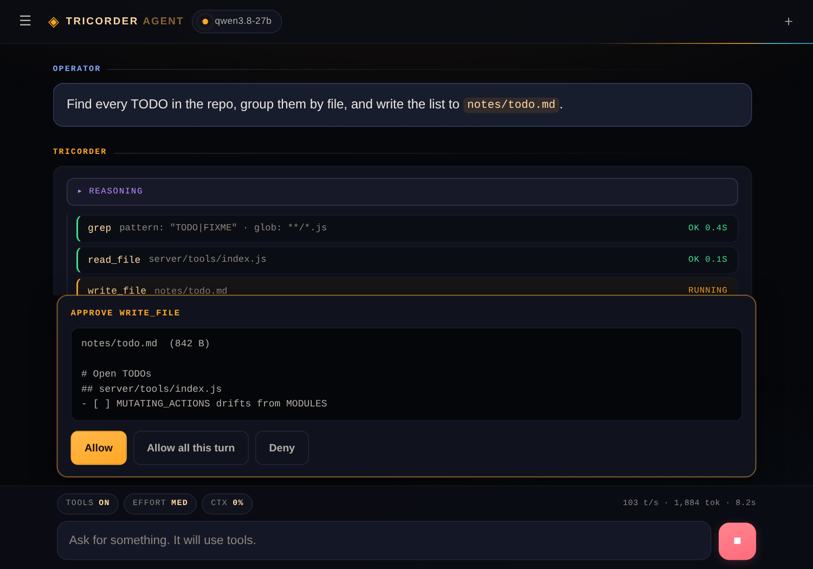

Not a chat window with a local model behind it. Tricorder Agent reads and writes files, runs shell commands, drives a headless browser, executes code in a sandbox, plans its own work and spawns sub-agents — at ~100 tokens/sec, with zero dependencies and nothing phoning home.
Measured on the reference build: Qwen3.8-27B at Q4_K_M on an RTX 5090.
Roughly ten times faster than you read. Hardware-bound — see the notes.
Files, web, shell, code, browser, memory, tasks, sub-agents.
Native window. Long enough for a fifteen-round tool chain over real files.
Node's standard library and vanilla browser JS. No install step, no build.
No npm install, no build step, no dependency tree to keep working. The runtime
is Node's standard library and vanilla browser JS — clone it and start it.
# that's it — setup runs itself git clone …/TricorderAgent cd TricorderAgent npm start
Every run after the first goes straight to the server. npm run setup redoes
the detection whenever you want it.
.env rather than overwriting, then creates the workspace and boots.Not a mockup — the actual app, mid-task.

Ask for something recurring in plain language. It becomes a scheduled task using the same tools, and the same approval rules, as a live conversation.
“Every weekday at 07:00, pull the overnight CI failures from my repos, group them by which test broke, and email me the summary.”
One task doing five things: a schedule, a multi-step tool chain, its own judgement about grouping, a written artifact, and delivery. It runs whether or not the browser is open.
Every weekday at 07:00, the 1st of the month, every four hours. Ordinary recurring work, described in words rather than crontab syntax.
“Check every 20 minutes until the deploy is green, then tell me.” It re-checks, reports progress, and deletes itself the moment the condition is true — a watchdog you have to clean up afterwards is a bug.
Results arrive by email with attachments, or as a file, or waiting in the chat. Restrict the agent to your own address and a scheduled task can never mail a stranger.
Two things usually trade off: a cloud assistant gets real tools but your data leaves the building; a local chat UI keeps the data but can only talk. This build refuses the trade.
| Capability | Tricorder AgentThis project | Cloud agent assistantsCategory | Local chat UIsCategory |
|---|---|---|---|
| Data stays on your machine | ●Always | ○Sent to vendor | ●Always |
| Works with the network off | ●Yes | ○No | ●Yes |
| Reads & writes real files | ●Sandboxed | ●Yes | ○Rarely |
| Shell with streaming output | ●Yes | ◐Varies | ○No |
| Recurring multi-step tasks | ●Cron + until-condition | ◐Varies | ○No |
| Emails you the result | ●SMTP + attachments | ◐Varies | ○No |
| Background sub-agents | ●Spawn & collect | ◐Varies | ○No |
| Headless browser & vision | ●Both | ◐Varies | ○No |
| Persistent memory across chats | ●Ranked, on disk | ◐Vendor-held | ○Rarely |
| Approval before writes & commands | ●On by default | ◐Varies | ○N/A |
| Install footprint | ●Node 20+, nothing else | ○Account | ◐Varies |
| Cost per token & rate limits | ●Neither | ▲Both | ●Neither |
| Source you can audit | ●MIT, no deps | ○Closed | ◐Varies |
40 tools the model can call, by category.
What the numbers do and don't claim.